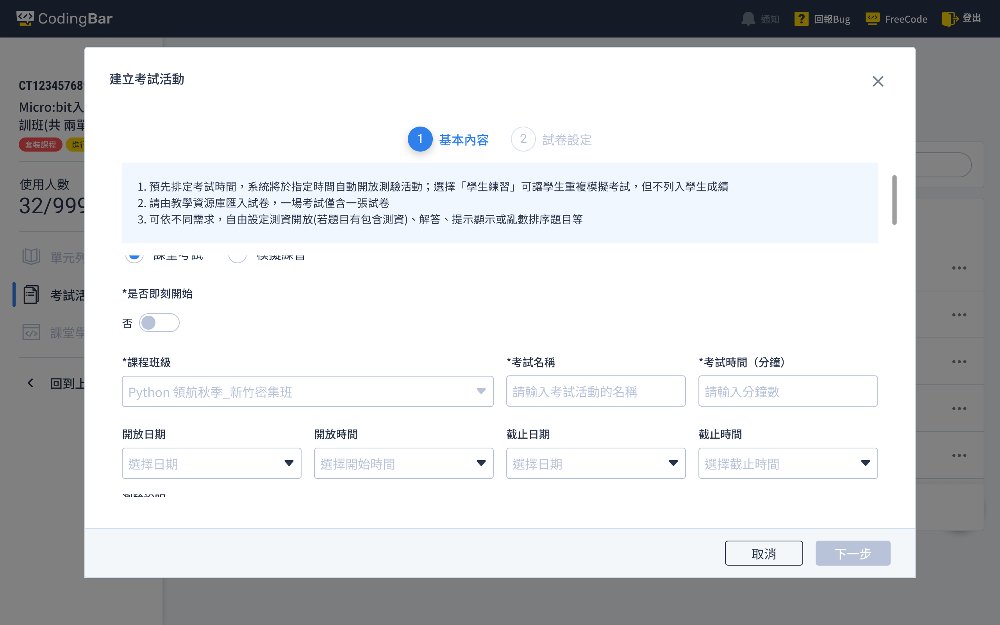

Developed a flexible exam feature within the existing system architecture to meet the needs of schools and tutoring centers. This design aims to enhance both student learning and teacher preparation efficiency.
CodingBar's proprietary platform allows teachers to remotely review students' code, addressing issues like a shortage of programming teachers and limited learning resources.
Initially designed for internal use, its features and workflows were designed according to the company’s own curriculum. Following its expansion, CodingBar is now adopted by over 60 high schools and junior high schools across Taiwan. However, the exam functionality on the platform no longer meets the diverse needs of these educational settings, prompting a redesign of the assessment features.
Redesign the exam feature based on teaching objectives and scenarios.
CodingBar platform separates "teaching resources" from "courses." While the exam function is being overhauled, it must align with the existing platform structure. The goal is to design a user flow that meets the needs of educational institutions while remaining intuitive and easy to use.
Exams are a crucial mechanism for assessing learning progress. When redesigning the exam functionality for the teacher platform, it’s essential to ensure that it aligns with the student platform’s exam features for consistency.
The current exam function is only accessible during course sessions, which does not align with institutional needs but has been in use for years. The redesigned features, while better suited to user scenarios, may cause discomfort for existing users and pose a learning curve for new users unfamiliar with the overall platform.
The new exam functionality was launched at the end of January 2022. From then until June 2022, schools and tutoring centers successfully conducted 1,373 exam sessions, with no inquiries or complaints about the exam features received by customer service or sales teams.
It also freed educators from time constraints associated with exam activities, allowing them to comfortably schedule personal activities on weekends. The platform's ease of use and efficiency significantly enhanced overall teaching effectiveness and user satisfaction.

Reframe the exam feature by defining its basic elements as: exam resources + exam events.
Exam papers are now treated as materials for an event, where parameters such as duration, availability, and test data provision are set for the event. This flexible approach allows for various configurations to suit different scenarios.
Under the "exam = resources + events" model, exam papers are stored in a resource library and can be applied across different classes, courses, and events.
When creating a test event, configure it as either a one-time, formal exam that counts towards grades or a repeatable simulation practice.
Previously, exam events could only be initiated during course sessions with a fixed duration. To offer more flexibility for students and reduce the time burden on teachers, new features allow for setting open and close times for exam events. Teachers can schedule exams in advance, and the system will open the test at the specified time. Students can then take the test within the open period.
The revamped exam feature introduced substantial changes. To support both new and existing users, I divided the new functionality into clear usage scenarios. Detailed, step-by-step guides with visuals were provided to help users quickly adapt to the new features. The launch announcement included these instructional materials.